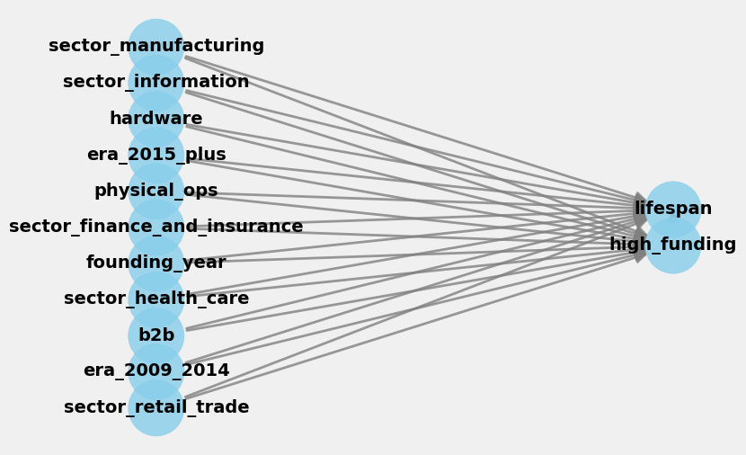
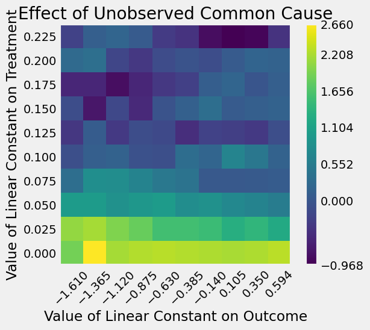

Causal Inference on Startup Failures
Among startups that eventually failed, does raising more money actually make them last longer? And does losing to a tech giant cut their life short?
Correlation is easy. Is it causal?
High-funded failed startups lived 2.45 years longer on average than low-funded ones. But they are not the same kinds of companies: they differ in sector, era and business model. A naive comparison would mix the effect of money with the effect of being, say, a B2B company in the 2010s. I set out to separate the two.
- Question 1: does raising more money cause failed startups to survive longer?
- Question 2: do startups that lost to tech giants (e.g. Google, Amazon) have shorter lifespans than comparable startups that didn’t?
356 failed startups, cleaned from six files
The data is the Kaggle Startup Failures dataset (CC BY-NC 4.0): failed startups across six sectors, with years of operation, funding raised and 13 binary failure-cause flags. Cleaning took it from 409 raw rows to 356:
- fixed a schema mismatch in one sector file and removed 5 duplicates across files;
- parsed founding year, end year and lifespan from two different text formats, and funding into $ millions;
- dropped 46 rows whose funding belonged to a parent company (e.g. “$0 (Coinbase-funded)”) and 1 unparseable row;
- built the treatment (
high_funding, above the $20M median), founding era, and business-model flags (hardware,physical_ops,b2b) from keyword rules, reviewed by hand.
I deliberately excluded the 13 failure-cause flags as confounders, because funding could cause them rather than the other way round.
State the assumptions, then try to break the estimate

- Balance checks: high-funded startups are more often hardware (21% vs. 7%) and B2B (22% vs. 12%), so the groups need adjusting.
- CausalML: average treatment effect from a linear S-learner and an XGBoost T-learner.
- DoWhy: explicit causal graph, backdoor identification, then linear regression and propensity score stratification.
- Refutation: random common cause, placebo treatment, data subset, and an unobserved-confounder sensitivity analysis.
- Heterogeneity: how the effect varies by business model and era. Then the whole identify → estimate → refute loop again for the tech-giants treatment.
About two extra years from funding; nothing from giants
Estimated effect on lifespan, with 95% confidence intervals
Show data table
Funding → lifespan. Adjusting for confounders shrinks the raw 2.45-year gap to 2.0–2.5 years: 2.21 (linear regression, 95% CI 1.59–2.82), 2.02 (XGBoost T-learner) and 2.47 (propensity score stratification). Every interval stays above zero.
Tech giants → lifespan. The adjusted estimate is +0.44 years (95% CI −0.27 to 1.15, p = 0.23): indistinguishable from zero, and if anything in the opposite direction to the hypothesis.
Who benefits most?
Effect of high funding by subgroup (years of lifespan)
Show data table
How fragile is the funding result?
| Refutation test | New estimate | What it shows |
|---|---|---|
| Add a random common cause | 2.21 | Stable (p = 0.98) |
| Placebo (shuffled) treatment | 0.04 | Effect disappears, as it should (p = 0.84) |
| Re-estimate on a 90% subset | 2.21 | Stable (p = 0.88) |
| Simulated unobserved confounder | −0.97 to 2.66 | Falls toward zero, and can turn negative, if a strong hidden factor exists |
Original estimate: 2.21 years. Values from the notebook’s printed DoWhy outputs.

For founders and VCs
- Money buys time, not survival. Every company here failed. High funding bought about two more years of life, not a different outcome.
- B2B is where capital stretches furthest. The estimated effect is about 4 years for B2B startups against 1.6 for others, and the raw gaps show the same pattern (4.65 vs. 1.83).
- Losing to a tech giant doesn’t explain lifespan. Startups flagged as losing to giants did not live shorter lives than comparable startups.
- Timing matters. When a startup was founded explains most of the variation in the funding effect (XGBoost feature importance ≈ 0.52 for founding year).
Data explorer
Compare high- and low-funded failed startups within a sector, era or business model. These are raw averages, not causal estimates. Groups with fewer than 5 startups are hidden.
Average lifespan by funding level
Show data table
What this can’t tell you
- Failed startups only: results describe startups that failed, not startups in general.
- Unmeasured confounders: founder experience, team size, location and market size could confound both estimates.
- Reverse timing: both treatments may partly reflect survival itself. Longer-lived startups have more time to raise money, or to run into a tech giant.
- Hand-built labels: business-model labels come from keyword rules with manual review; the Giants flag was assigned retrospectively from press coverage.
- Small subgroups: heterogeneous-effect results are exploratory with 356 startups; only 12 hardware startups had low funding.
Built as Assignment 2 for Enterprise Data Science (McGill MMA). The notebook includes an AI-use disclosure.